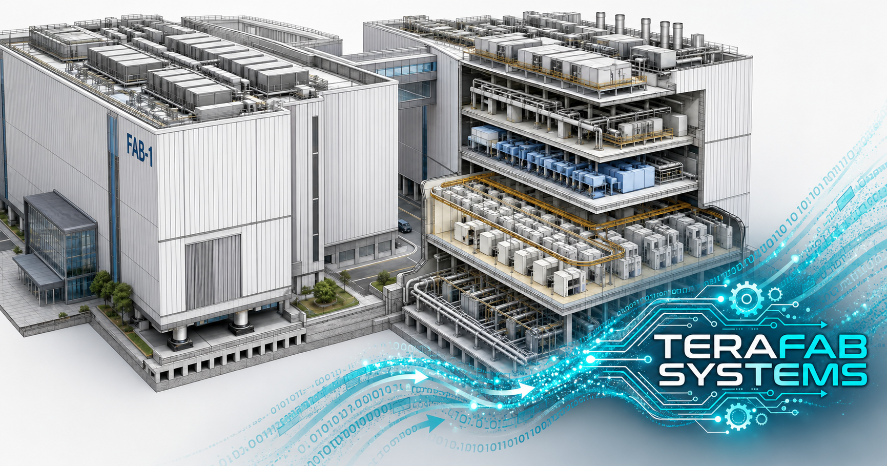
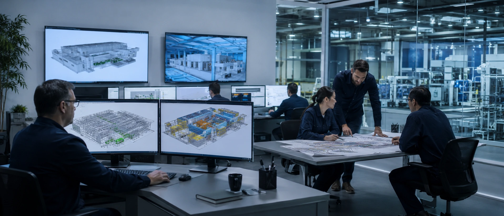
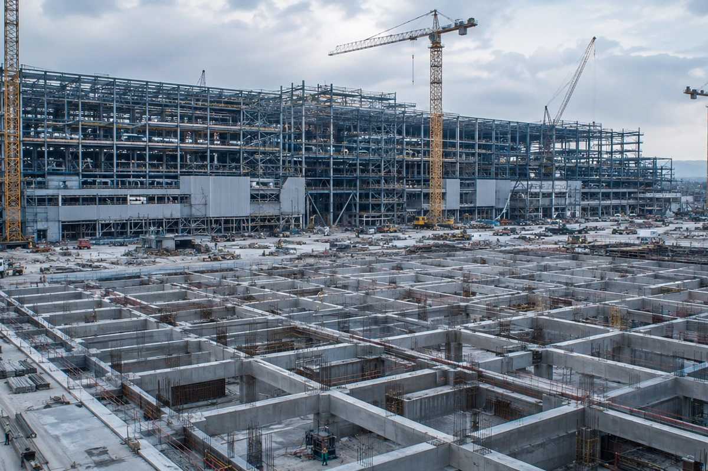
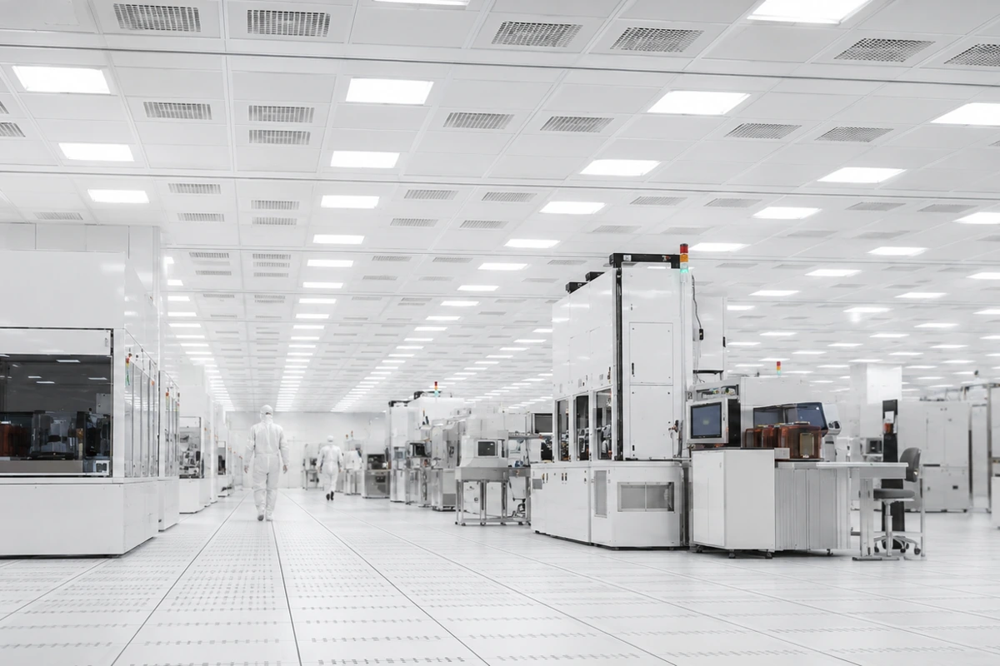
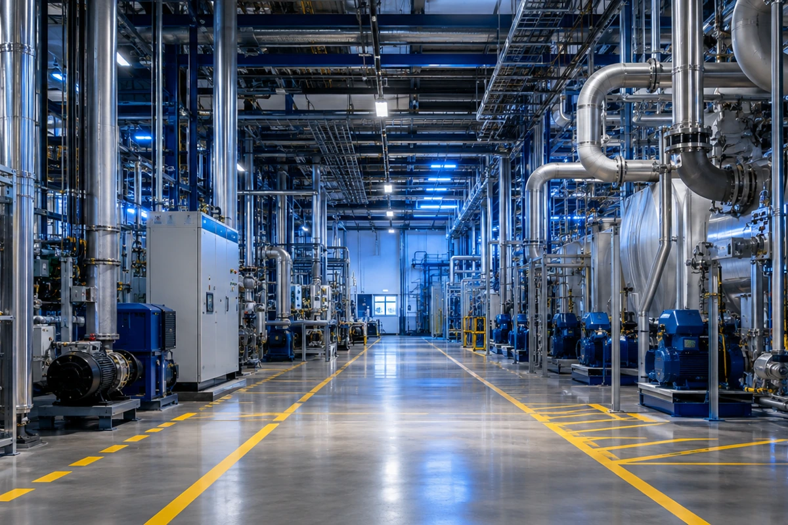
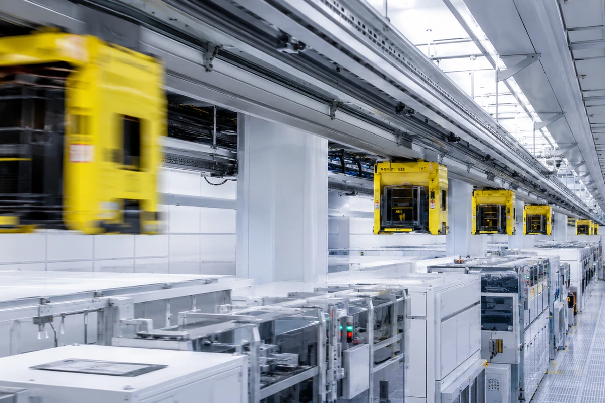
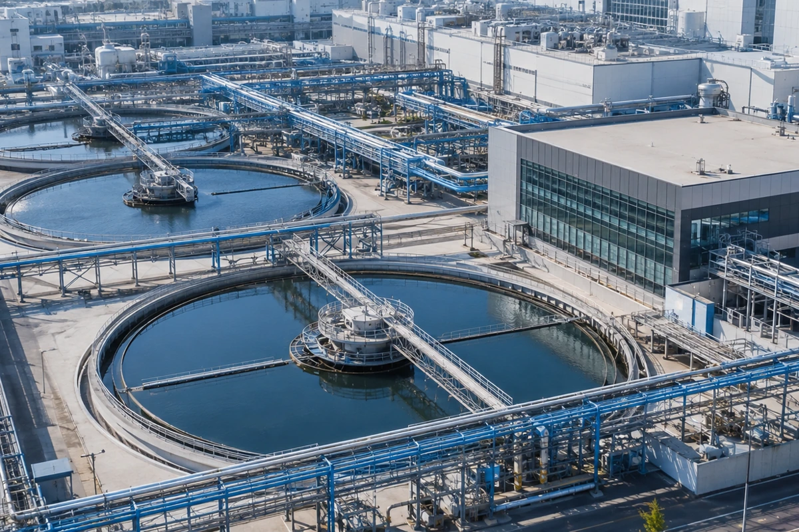
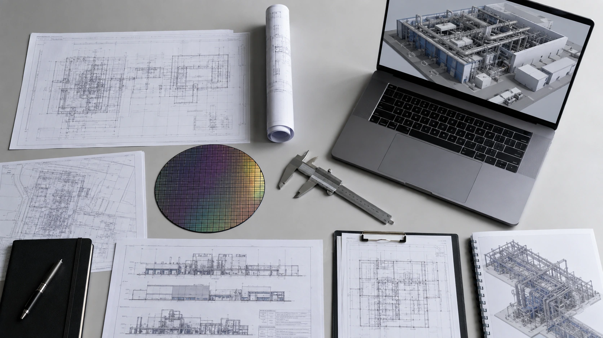
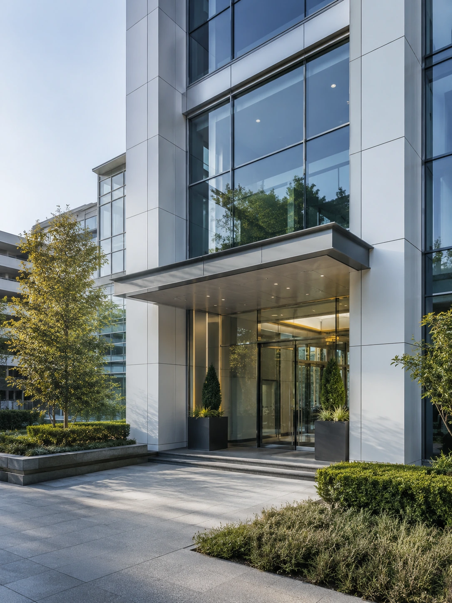

從基礎底板，
到天車軌道。
Full-stack fab engineering. One accountable partner.
TeraFab 是先進半導體廠房的統包工程顧問。從廠房基建、無塵室、純水特氣機電， 到 OHT 晶圓搬送與廢水回收系統——整廠各系統的規劃、設計整合、發包與施工管理， 由一個窗口對您負責。

A · 公司定位
統包顧問，
一個窗口扛起整座廠。
先進晶圓廠是數十個高度耦合的系統：結構微振動影響曝光機、氣流設計牽動良率、 天車路網決定產能節拍。TeraFab 以統包顧問（Turnkey Consulting）模式， 替業主整合所有專業與介面，讓複雜的建廠工程只剩一個對口。
單一窗口統包整合
從需求定義到竣工移交，由 TeraFab 統籌各系統顧問、設計與施工廠商，業主只需面對一個負責窗口。
跨系統介面管理
基建 × 無塵室 × 機電 × 搬送系統之間的介面，是建廠風險最高的地方——也是我們最擅長的地方。
全生命週期服務
可行性評估、總體規劃、設計整合、發包採購、施工管理到調適驗收，並延伸至營運期廠務支援。

B · 業務範圍
六大系統領域，整廠交付。
依廠房層別對應之統包服務項目——點擊各項瞭解服務範疇、執行方式與關鍵指標。

廠房基建工程
廠區總體規劃、微振動結構設計、華夫板與鋼構工程——為先進製程打下毫米級的地基。
深入了解
無塵室規劃及建造
ISO Class 3–6 潔淨等級規劃、氣流設計與 Bay-Chase 佈局，從隔間工程到認證測試一次到位。
深入了解
純水・特殊氣體・機電工程
UPW 超純水、特氣與化學品供應、高低壓配電與空調排氣系統之規劃設計與施工管理。
深入了解
OHT 天車晶圓搬送系統
AMHS 總體規劃、軌道路網與搬送模擬、MCS 整合與廠商評選——讓每一個 FOUP 準時抵達。
深入了解
廢水處理回收・特氣回收
廢水分流處理、RO／UF 中水回用與 PFCs 減量、特氣回收工程——兼顧法規與永續目標。
深入了解廠務監控中心與數位孿生儀表牆
廠務系統整合
FMCS／SCADA 監控、能源管理、氣體偵測與數位孿生——全廠系統，一張圖掌握。
深入了解C · 服務流程
統包六階段，從第一張圖到交鑰匙。
可行性評估
選址條件、產能需求、法規與投資框架分析。
總體規劃
廠區 Master Plan、系統容量規劃與擴建藍圖。
設計整合
基本／細部設計，跨系統介面整合與 BIM 協同。
發包採購
規格書制定、廠商評選與合約採購管理。
施工管理
進度、品質、安全與介面協調的全程監造。
調適驗收移交
系統測試調適（T&C）、認證驗收與文件移交。

D · 聯絡我們
開始您的建廠計畫。
無論是新建晶圓廠、既有廠房擴建，或單一系統的規劃諮詢，歡迎與我們聊聊。
